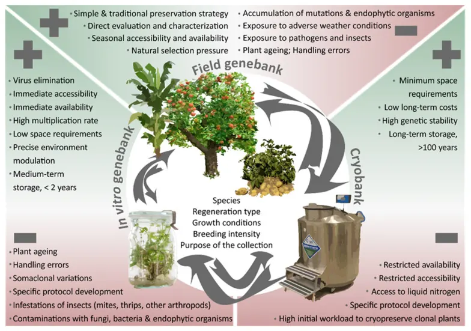
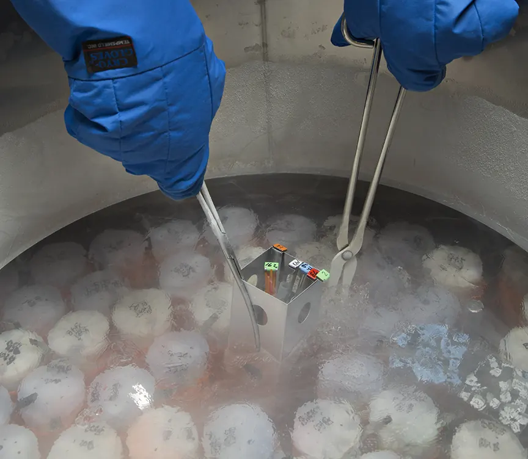
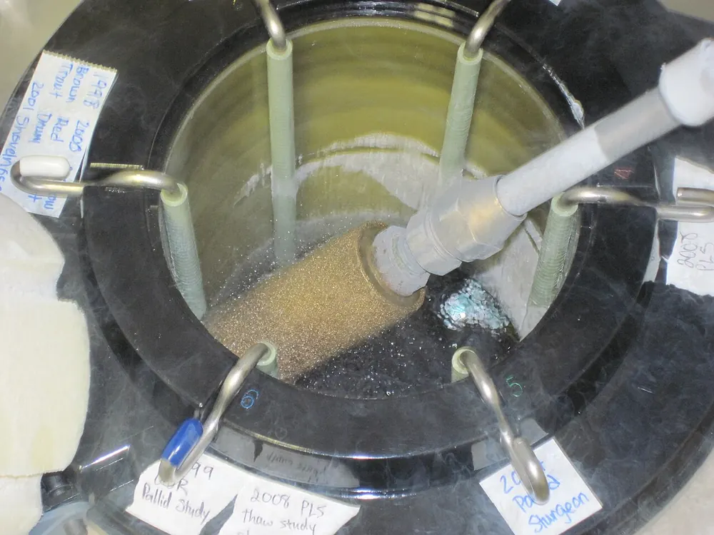
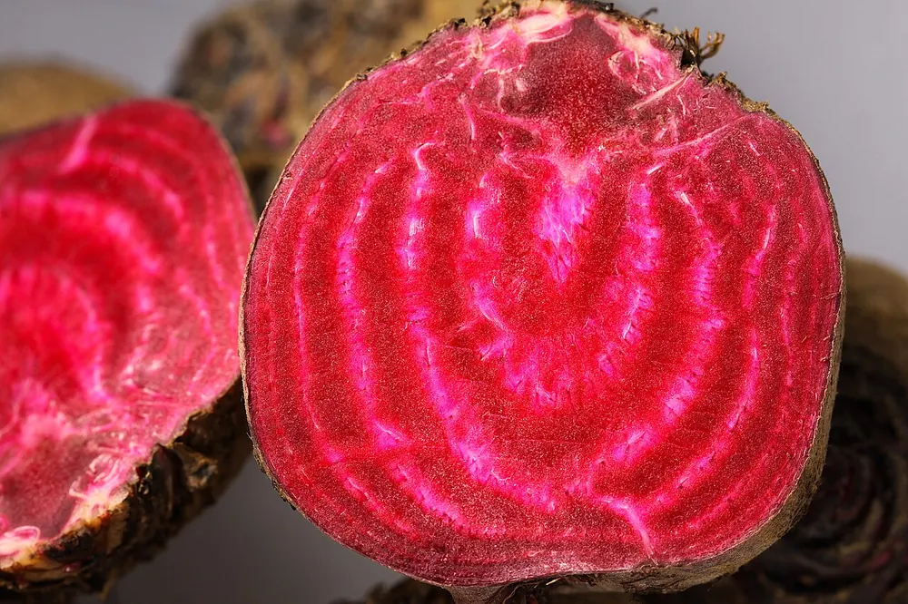

01Мета і план
Мета
З’ясувати, чому заморожування пошкоджує рослинні клітини і як їх захищають кріопротектори (речовини, що оберігають клітини й білки від холоду) та правильний режим охолодження; експериментально оцінити захисну дію сахарози й гліцерину на клітини коренеплоду буряка та на білки клітинного соку.
Знадобиться
- 1 М розчини сахарози й гліцерину, 8 % NaCl, дистильована вода;
- коренеплоди цукрових буряків, бульби картоплі, листя капусти;
- лід або сніг і кухонна сіль, пробірки, термометри, пробкові свердла, скальпелі;
- мікроскоп, предметні й покривні скельця, фільтрувальний папір.
Ви навчитеся
- пояснювати роль позаклітинного й внутрішньоклітинного льоду;
- обирати швидкість охолодження й кріопротектор для програмного заморожування;
- оцінювати пошкодження клітин за виходом пігменту й плазмолізом, а білків — за коагуляцією.
02Теоретичні відомості
Колекції та кріобанки
Біорізноманіття скорочується: за оцінками екологів, щогодини з планети зникає один вид, а разом із ним — від 1 до 10 тис. генів. Тому країни створюють банки зародкової плази (germplasm — генетичного матеріалу, з якого можна відновити рослину): насіння, меристем, пилку, зародків, культур тканин і клітин. Найповніше генофонд зберігається в природних популяціях (заповідники, ботанічні сади), але цього недостатньо. Колекції клітинних штамів потрібні й промисловості: клітинні культури-продуценти замінюють природну сировину на біотехнологічних заводах, і їх втрата зупинила б виробництво.
Щоб утримувати колекції in vitro (у пробірках) дешевше, ріст об’єктів сповільнюють: зберігають під шаром мінерального масла, змінюють газовий склад і тиск у посудині, світловий режим, охолоджують до припинення росту, додають гормональні (хлорхолінхлорид) чи осмотичні (маніт 3–6 %) інгібітори, замінюють у середовищі CaCl2 на Ca(NO3)2, індукують утворення мікробульб у пробірках. Інший шлях — висушування, найчастіше ліофільне (сублімаційне): заморожений тонкий шар розчину витримують у вакуумі 0,01–2 мм рт. ст., і лід випаровується, минаючи рідку фазу (при 4,6 мм рт. ст. вода кипить при 0 °C, при 0,034 мм рт. ст. — при −50 °C). За ≈ 2 год об’єкт висихає до ≈ 0,5 % вологи. Найнадійніший спосіб — кріозбереження.


Що таке кріозбереження
Кріозбереження (кріоконсервація, cryopreservation) — зберігання живих об’єктів за дуже низької температури, зазвичай у рідкому азоті (−196 °C), у стані анабіозу (оборотного зупинення життєдіяльності; при кріозбереженні — кріобіозу). Тривале зберігання можливе лише тоді, коли метаболізм повністю зупинено і в клітинах немає рідкої фази, тобто нижче −140 °C. Клітини моркви зберігаються в азоті близько 25 років, меристеми картоплі — понад 10 років; морфогенетичні й ембріогенні властивості при цьому не змінюються, якщо не порушено режим зберігання.
Найважливіший і найнебезпечніший етап — заморожування. Відомі два методи: програмне (повільне) і надшвидке заморожування. Об’єкти з малим вмістом води (пилок, ортодоксальне насіння — те, що переносить висушування) можна просто занурити в азот і потім розморозити на повітрі. Більшість же рослинних тканин мають великі клітини з міцною целюлозною стінкою і центральною вакуолею; саме оводненість (вакуолізація) визначає їхню чутливість до холоду, тому для кріозбереження добирають дрібні клітини з малою вакуолею та зниженим вмістом води.
Лід: позаклітинний і внутрішньоклітинний
Клітини ушкоджують два чинники: лід, що спершу виникає в розчині навколо клітин, і зневоднення (дегідратація) клітин, яке цей лід спричиняє. Обидва діють у «небезпечній зоні» — від температури захисного розчину до −40 °C (інколи до −70 °C) — і руйнують передусім плазмалему (зовнішню клітинну мембрану). Ось чому цю зону треба проходити за правильною програмою.
- Швидке охолодження (≈ 20 °C/хв) не дає воді вийти з клітини: цитоплазма переохолоджується (лишається рідкою нижче своєї точки замерзання), і в протопласті виникають дрібні кристали льоду. Безпечні лише кристали до 0,1 мкм, а ці швидко ростуть, забираючи воду з протопласта, і механічно руйнують мембрани та органели.
- Повільне охолодження (у парах рідкого азоту або в програмному заморожувачі) веде до утворення льоду насамперед у міжклітинниках (апопласті). Лід «притягує» воду: виникає градієнт водного потенціалу від клітин до міжклітинників, клітини поступово зневоднюються. Помірне зневоднення рятує від внутрішньоклітинного льоду, а надмірне — денатурує білки, порушує мембрани й підвищує концентрацію йонів до токсичної («ефекти розчину»).
Клітини можуть виділяти в апопласт нуклеатори — речовини, що стають центрами кристалізації (процес — нуклеація), тож позаклітинний лід утворюється за вищої температури, ніж замерзає цитоплазма. Протилежно діють біологічні антифризи — білки, глікопротеїни, полісахариди, що гальмують нуклеацію й ріст кристалів (у бруньках і меристемах, які зберігають воду в переохолодженому стані).
Кількісно все визначає кріоскопічний закон: розчин замерзає нижче 0 °C тим сильніше, чим більша його моляльність m (кількість молів розчинених частинок на 1 кг води):
Коли лід уже є, рідина між кристалами перебуває в рівновазі з ним: при температурі T її осмоляльність Π = −T/Kк (при −10 °C — 5,4 осмоль/кг, у 18 разів концентрованіша за поживне середовище). Частка води, що лишилася незамерзлою, дорівнює
Що більше розчинено (наприклад, кріопротектора), то вища частка незамерзлої води і тим менше солі концентруються навколо клітин і білків.
Чи встигне клітина віддати воду льоду, описує модель П. Мазура: вода виходить зі швидкістю, пропорційною різниці осмоляльностей зовні (Π) і всередині (Πвн), а проникність мембрани для води k різко падає з охолодженням (за законом Арреніуса). Різниця осмоляльностей задає переохолодження цитоплазми ΔT — що воно більше, то ймовірніший внутрішньоклітинний лід:
де W — частка осмотично активної води в клітині від вихідної. Великі вакуолізовані клітини мають менше поверхні на одиницю об’єму і віддають воду повільніше, тому їм потрібне повільніше охолодження: «чим більше води в клітині, тим меншою має бути швидкість заморожування» (посібник, с. 192).
Кріопротектори та інші механізми стійкості
Під час холодового зневоднення клітини накопичують осмоліти — добре розчинні, нетоксичні низькомолекулярні сполуки, що не порушують обмін речовин (тому їх ще називають сумісними речовинами): моно- й олігоцукри, багатоатомні спирти, амінокислоти (насамперед пролін, а також аланін, аспарагін, серин, гліцин, γ-аміномасляна кислота), бетаїни, аміни, білки. Вони регулюють осмотичний тиск і водночас захищають біополімери цитоплазми; через цю подвійну роль їх називають кріопротекторами (від грец. kryos — холод і лат. protector — захисник). Цукри знижують точку замерзання цитоплазми (формула 1), підвищують водоутримну здатність клітин і не дають білкам денатурувати, коли макромолекули зближуються при зневодненні.
Кріопротектори поділяють на проникні — диметилсульфоксид (ДМСО, 5–10 %), гліцерин (10–20 %), етиленгліколь, пролін — і непроникні високомолекулярні: полівінілпіролідон (ПВП), декстран, поліетиленгліколь (ПЕГ) з молекулярною масою 6000, а також сахароза й трегалоза. Гліцерин проникає в клітину за кімнатної температури, а при 0 °C стає непроникним — тож клітини інкубують з ним заздалегідь. Попереднє культивування з манітом або сорбітом (2–6 %) зменшує оводненість і розтягнення клітин.
Стійкість до морозу визначають і мембрани: ліпіди з насиченими жирними кислотами (пальмітиновою, стеариновою) твердіють за вищої температури, а ненасичені (лінолева, ліноленова) зберігають текучість мембрани на холоді. Головна мішень кріоушкоджень — плазмалема. Фітогормон АБК (абсцизова кислота, «гормон стресу») накопичується на холоді й запускає синтез кріозахисних білків; екзогенна АБК підвищує морозостійкість. Холод посилює утворення АФК (активних форм кисню), тому важлива антиоксидантна система — супероксиддисмутаза, каталаза, пероксидаза, глутатіонредуктаза, аскорбат, токоферол (холод і заморозки в Конспекті, антиоксидантний захист).
Підготовка, програмне заморожування, відтавання
- Підготовка. Найстійкіші клітини стаціонарної фази росту (у логарифмічній фазі потрібна точніше підібрана швидкість). Клітини загартовують — поступово знижують температуру культивування й одночасно підвищують концентрацію сахарози; змінюють склад середовища (співвідношення вуглецю й азоту, жирні кислоти, солі кальцію), додають АБК, пролін, осмотики. Здатність до загартування генетично зумовлена.
- Кріопротектори вносять до заморожування, щоб проникні встигли увійти в клітини.
- Програмне заморожування з ініціацією кристалізації: перший етап — 0,25–1,0 °C/хв до −40 °C; другий — 9–10 °C/хв до ≈ −60 °C; потім занурення в рідкий азот. Ініціація кристалізації (внесення центру льоду при −2…−4 °C) не дає розчину переохолодитися й «вибухнути» льодом.
- Видалення кріопротекторів і рекультивування — делікатний етап: розчин замінюють поступово, наприклад висівом суспензії на фільтри на поверхні рідкого середовища, звідки протектор дифундує.
- Життєздатність після відтавання оцінюють вітальними барвниками — 0,1 % феносафраніном або 0,25 % синькою Еванса (мертві клітини стають синіми), а остаточний критерій — відновлення росту й поділу на живильному середовищі.




Теорія лабораторних робіт 54–55
У пробірки з висічками коренеплоду буряка (ЛР 54) чи з клітинним соком (ЛР 55) додають розчини сахарози й гліцерину і заморожують в охолоджувальній суміші з трьох частин льоду (снігу) й однієї частини кухонної солі (≈ −20 °C; нижче −21 °C, евтектичної точки суміші NaCl з водою, така суміш не охолоджує). Вода в пробірці спершу переохолоджується, потім кристалізується; поки вода перетворюється на лід, температура тримається на «плато» біля точки замерзання — виділяється теплота кристалізації.
У ЛР 54 пошкодження клітин видно неозброєним оком: бетаціанін (червоно-фіолетовий пігмент вакуолей буряка) з живої клітини не виходить, а з пошкодженої переходить у розчин. Під мікроскопом рахують знебарвлені клітини, а в 8 % NaCl — плазмолізовані (з протопластом, що відстав від стінки в гіпертонічному розчині): плазмоліз можливий лише в живій клітині з напівпроникною мембраною. У ЛР 55 сік, що замерзає, концентрується між кристалами, білки денатурують (втрачають природну просторову будову) і коагулюють — злипаються в пластівці.
| № | ЛР 54 (5 мл) | Tзам, °C | ЛР 55 (2,5 мл соку + 2,5 мл) | Tзам, °C |
|---|---|---|---|---|
| 1 | вода (контроль) | 0,0 | вода (контроль) | −0,3 |
| 2 | сахароза 0,5 М | −1,1 | сахароза 0,5 М | −1,4 |
| 3 | сахароза 1 М | −2,6 | сахароза 0,25 М | −0,8 |
| 4 | гліцерин 0,5 М | −1,0 | гліцерин 0,5 М | −1,2 |
| 5 | гліцерин 1 М | −2,0 | гліцерин 0,25 М | −0,8 |
| 6 | сахароза 0,5 М + гліцерин 0,5 М | −2,3 | — | — |
Точка замерзання знижується лише на 1–3 °C, тож при −20 °C у всіх пробірках замерзає 85–100 % води. Захист полягає не стільки в тому, що розчин «не мерзне», скільки в тому, що за формулою (2) лишається більше незамерзлої води, солі й білки менше концентруються, а молекули цукрів і гліцерину стабілізують мембрани й білки.


Що в моделях — посібник, а що — наближення
З посібника: склад розчинів у пробірках, температура охолоджувальної суміші й тривалість, режим двоетапного програмного заморожування, концентрації ДМСО й гліцерину, барвники для оцінки життєздатності, якісні закономірності (лід у протопласті при швидкому охолодженні, зневоднення при повільному, перевага дрібних клітин). Наближеннями є: модель водообміну Мазура (формула 3) з підібраними коефіцієнтами проникності й енергією активації 55 кДж/моль; імовірність внутрішньоклітинного льоду, що зростає експоненційно з переохолодженням; «склування» сильно зневодненої цитоплазми; тепловий баланс пробірки (час охолодження 1,3 хв, теплота кристалізації 80 °C у перерахунку на теплоємність води); частки пошкоджених клітин і скоагульованого білка — функції «дози» заморожування. Модель відтворює класичну куполоподібну залежність «виживання — швидкість охолодження», але не замінює досліду.
Оборотне зупинення життєдіяльності; при кріозбереженні — через глибокий холод.
Речовина, що захищає клітини й білки від пошкоджень при заморожуванні.
Стан рідини нижче її точки замерзання без утворення льоду.
Утворення перших центрів кристалізації льоду.
Простір поза протопластами: клітинні стінки й міжклітинники.
Кількість молів розчиненої речовини на 1 кг води (моль/кг).
Найнижча температура, за якої розчин солі ще рідкий (для NaCl −21 °C).
Висушування замороженого об’єкта у вакуумі (сублімація льоду).
Стійкість рослин до холоду й заморозків — у Конспекті: холод і заморозки, будова рослинної клітини. Моделі — нижче.
03Інтерактивна модель
Перша вкладка — загальна модель кріозбереження: програмний заморожувач, посудина Дьюара й поле зору кріомікроскопа (мікроскопа з охолоджуваним столиком). Дві інші — лабораторні роботи 54 і 55. Параметри одразу перераховують статичний кадр і графіки; «▶ Запустити» проводить дослід у прискореному часі. Теорія — у підрозділах лід, кріопротектори, ЛР 54–55.
Швидкість охолодження, кріопротектор і лід під кріомікроскопом
Повзунок «Момент досліду» показує будь-яку мить програми; запуск проходить усю програму, зберігання в азоті, відтавання й забарвлення синькою Еванса.
Захист клітин коренеплоду буряка сахарозою й гліцерином
Шість пробірок з висічками — в охолоджувальну суміш, потім у воду кімнатної температури; пігмент виходить із пошкоджених клітин. Торкніться пробірки, щоб розглянути її препарат.
Коагуляція білків клітинного соку при −20 °C
Сік картоплі або капусти з водою чи протектором заморожують і розморожують без струшування; рахуємо пластівці коагульованого білка.
04Хід лабораторних робіт
У тексті посібника ці роботи пронумеровано 53 і 54 (номер 53 уже має робота з поліфенолоксидазою теми 12); тут — наскрізна нумерація 54 і 55.
Робота 54. Захисна дія кріопротекторів на стійкість рослинних клітин до низьких температур с. 198–200
- Приготувати охолоджувальну суміш: 3 частини снігу або льоду + 1 частина кухонної солі (≈ −20 °C).
- Вирізати з коренеплоду буряка пластинки товщиною 5 мм, пробковим свердлом Ø 5–6 мм зробити висічки.
- Ретельно промити висічки водою до повного видалення клітинного соку; покласти по 3–4 в підписані пробірки.
- Налити: № 1 — 5 мл води (контроль); № 2 — 2,5 мл 1 М сахарози + 2,5 мл води; № 3 — 5 мл 1 М сахарози; № 4 — 2,5 мл 1 М гліцерину + 2,5 мл води; № 5 — 5 мл 1 М гліцерину; № 6 — 2,5 мл 1 М сахарози + 2,5 мл 1 М гліцерину.
- Поставити пробірки на 15–20 хв в охолоджувальну суміш, обережно вийняти й розморозити в склянці води кімнатної температури.
- Порівняти забарвлення висічок і рідини в пробірках, пояснити відмінності.
- Зробити тонкі зрізи висічок, розглянути при збільшенні ×10 у краплі «свого» розчину; підрахувати в полі зору загальну кількість клітин і знебарвлених (з яких вийшов бетаціанін).
- Перевірити життєздатність плазмолізом: зрізи на 10 хв у 8 % NaCl, підрахувати відсоток плазмолізованих клітин (не менше п’яти полів зору).
- Зробити висновки про захисну дію кріопротекторів на цитоплазму.
Робота 55. Вплив кріопротекторів на білки цитоплазми за дії негативних температур с. 200–201
- Очищену картоплю натерти, віджати сік крізь подвійну марлю, дати відстоятися крохмалю, злити надосадову рідину.
- Листя капусти дрібно нашинкувати, віджати сік, профільтрувати крізь марлю.
- Налити по 2,5 мл соку і додати по 2,5 мл: № 1 — води (контроль); № 2 — 1 М сахарози; № 3 — 0,5 М сахарози; № 4 — 1 М гліцерину; № 5 — 0,5 М гліцерину (кінцеві концентрації вдвічі менші).
- Перемішати і поставити на 15–20 хв в охолоджувальну суміш (≈ −20 °C).
- Обережно вийняти, не струшуючи розморозити в склянці води кімнатної температури, спостерігати за пластівцями коагульованого білка.
- Замалювати вміст пробірок, зробити висновки про захисну дію кріопротекторів на білки й морозостійкість різних рослин.
05Контрольні питання
Які способи застосовують для уповільнення росту клітин у колекціях?
У чому суть ліофільного висушування?
Чому заморожування — найважливіший етап кріозбереження?
Чим заморожування рослинних клітин складніше, ніж клітин тварин і мікроорганізмів?
Порівняйте дію позаклітинного й внутрішньоклітинного льоду.
Як запобігти утворенню внутрішньоклітинного льоду?
Чим відрізняються проникні й непроникні кріопротектори?
Чому в пробірці з водою (ЛР 54) рідина червоніє, а з 1 М сахарозою — ні?
Який фітогормон бере участь в адаптації клітин до низьких температур?
Перелічіть етапи технології кріоконсервації.
06Література
- Мельничук, М. Д., & Кляченко, О. Л. (2014). Біотехнологія в агросфері: навчальний посібник (с. 189–202). НУБіП України.
- Mazur, P. (1963). Kinetics of water loss from cells at subzero temperatures and the likelihood of intracellular freezing. Journal of General Physiology, 47(2), 347–369. https://doi.org/10.1085/jgp.47.2.347
- Mazur, P. (1970). Cryobiology: The freezing of biological systems. Science, 168(3934), 939–949. https://doi.org/10.1126/science.168.3934.939
- Panis, B., Nagel, M., & Van den Houwe, I. (2020). Challenges and prospects for the conservation of crop genetic resources in field genebanks, in in vitro collections and/or in liquid nitrogen. Plants, 9(12), 1634. https://doi.org/10.3390/plants9121634
- Engelmann, F. (2004). Plant cryopreservation: Progress and prospects. In Vitro Cellular & Developmental Biology — Plant, 40(5), 427–433. https://doi.org/10.1079/IVP2004541
- Thomashow, M. F. (1999). Plant cold acclimation: Freezing tolerance genes and regulatory mechanisms. Annual Review of Plant Physiology and Plant Molecular Biology, 50, 571–599. https://doi.org/10.1146/annurev.arplant.50.1.571